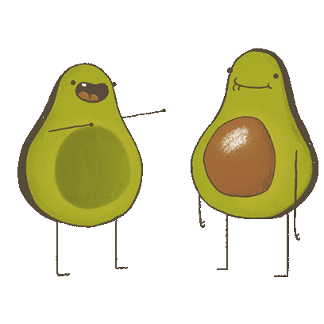

  <body>
    <link rel= "stylesheet" type="text/css" href="style.css">
      <div class="loader hidden">
        
      </div>
      <h2 class="Click_icon">Click on one of the icons below to learn more about how our food travels</h2>
        <div class="container">
          <div class= "beef">
            
          </div>
          <div class= "turkey">
              
          </div>
          <div class= "cheese">
            
          </div>
          <div class= "almonds">
            
          </div>
          <div class="avocado">
            
          </div>
          <div class= "lamb">
            
          </div>
          <p style="clear: both;">
        </div>
      <script type="text/javascript"></script>
    <! social media section -->
    <!-- jQuery library -->
    <script src="https://ajax.googleapis.com/ajax/libs/jquery/1.11.3/jquery.min.js"></script>
    <!-- Latest compiled JavaScript -->
    <script src="http://maxcdn.bootstrapcdn.com/bootstrap/3.3.5/js/bootstrap.min.js"></script>
    <link href="https://maxcdn.bootstrapcdn.com/font-awesome/4.6.3/css/font-awesome.min.css" rel="stylesheet">
    <footer class="social-footer"
      <div class="social-footer">
        <div id="social">
          <ul>
            <li class="facebook">
              <a href="https://www.facebook.com/FoodPrintOrg/">
              <button class="border"><i class="fa fa-facebook"></i></button></a>
            </li>
            <li class="youtube">
              <a href ="https://www.youtube.com/watch?v=d07B3_aFzK8">
              <button class="border"><i class="fa fa-youtube"></i></button></a>
            <li class="twitter">
              <a href ="https://twitter.com/foodprintorg?lang=en">
              <button class="border"><i class="fa fa-twitter"></i></button></a>
            </li>
            <li class="instagram">
              <a href = "https://www.instagram.com/foodprintorg/?hl=en">
              <button class="border"><i class="fa fa-instagram"></i></button></a>
            </li>
            <li class="github"> <! Insert link for github here once finished -->
              <button class="border"><i class="fa fa-github"></i></button>
            </li>
          </ul>
        </div>
      </div>
  </footer>
</body>
